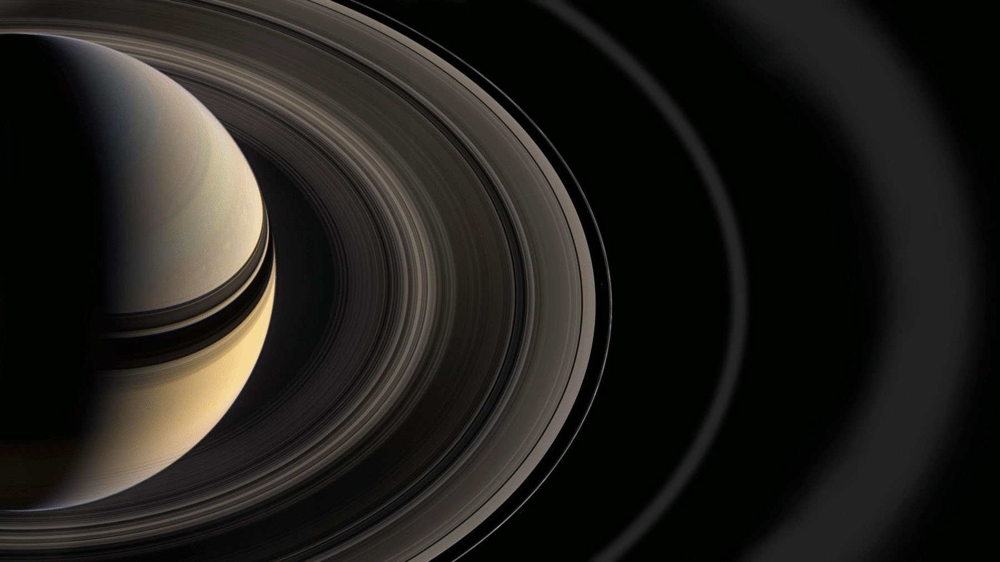

Introdction
Saturn is the sixth planet from the Sun and the second-largest planet in our solar system. Like fellow gas giant Jupiter, Saturn is a massive ball made mostly of hydrogen and helium. Saturn is not the only planet to have rings, but none are as spectacular or as complex as Saturn's. Saturn also has dozens of moons.
From the jets of water that spray from Saturn's moon Enceladus to the methane lakes on smoggy Titan, the Saturn system is a rich source of scientific discovery and still holds many mysteries.
Namesake
The farthest planet from Earth discovered by the unaided human eye, Saturn has been known since ancient times. The planet is named for the Roman god of agriculture and wealth, who was also the father of Jupiter.
Potential for Life
Saturn's environment is not conducive to life as we know it. The temperatures, pressures, and materials that characterize this planet are most likely too extreme and volatile for organisms to adapt to.
While planet Saturn is an unlikely place for living things to take hold, the same is not true of some of its many moons. Satellites like Enceladus and Titan, home to internal oceans, could possibly support life.
Size and Distance
With a radius of 36,183.7 miles (58,232 kilometers), Saturn is 9 times wider than Earth. If Earth were the size of a nickel, Saturn would be about as big as a volleyball.
From an average distance of 886 million miles (1.4 billion kilometers), Saturn is 9.5 astronomical units away from the Sun. One astronomical unit (abbreviated as AU), is the distance from the Sun to Earth. From this distance, it takes sunlight 80 minutes to travel from the Sun to Saturn.
Orbit and Rotation
Saturn has the second-shortest day in the solar system. One day on Saturn takes only 10.7 hours (the time it takes for Saturn to rotate or spin around once), and Saturn makes a complete orbit around the Sun (a year in Saturnian time) in about 29.4 Earth years (10,756 Earth days).
Its axis is tilted by 26.73 degrees with respect to its orbit around the Sun, which is similar to Earth's 23.5-degree tilt. This means that, like Earth, Saturn experiences seasons.
Moons
Saturn is home to a vast array of intriguing and unique worlds. From the haze-shrouded surface of Titan to crater-riddled Phoebe, each of Saturn's moons tells another piece of the story surrounding the Saturn system. Currently, Saturn has 53 confirmed moons with 29 additional provisional moons awaiting confirmation.
Rings
Saturn's rings are thought to be pieces of comets, asteroids, or shattered moons that broke up before they reached the planet, torn apart by Saturn's powerful gravity. They are made of billions of small chunks of ice and rock coated with other materials such as dust. The ring particles mostly range from tiny, dust-sized icy grains to chunks as big as a house. A few particles are as large as mountains. The rings would look mostly white if you looked at them from the cloud tops of Saturn, and interestingly, each ring orbits at a different speed around the planet.
Saturn's ring system extends up to 175,000 miles (282,000 kilometers) from the planet, yet the vertical height is typically about 30 feet (10 meters) in the main rings. Named alphabetically in the order they were discovered, the rings are relatively close to each other, with the exception of a gap measuring 2,920 miles (4,700 kilometers) in width called the Cassini Division that separates Rings A and B. The main rings are A, B, and C. Rings D, E, F, and G are fainter and more recently discovered.
Starting at Saturn and moving outward, there is the D ring, C ring, B ring, Cassini Division, A ring, F ring, G ring, and finally, the E ring. Much farther out, there is the very faint Phoebe ring in the orbit of Saturn's moon Phoebe.